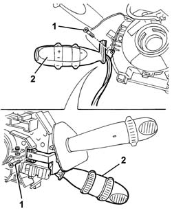

5580A10 cruise control lever assembly - r+r
- Path
- Procedures > 55 ELECTRICAL EQUIPMENT > 5580 SPECIAL ACCESSORIES > 5580A cruise control system > 5580A10 cruise control lever assembly - r+r
- Kind
- repair procedure (removal / refitting; the operation number is the code)
- Applies to
- all engines; all production periods
- Interactive page
- https://sloeber94.github.io/elrnDB-a147/en/#/3025606
Applies to: all engines; all production periods
 Removing
Removing
 Refitting
Refitting4110A11 steering wheel - r+r for replacement or check for versions with air bag
7040A26 steering column trim - r+r
5580C12 clock spring for air bag module on steering wheel r r
5550A12 complete stalk unit - r+r for versions with air bag
1. Working at the bench on the left side of the steering column switch unit, undo the bolts fixing the Cruise Control lever.
2. Remove the Cruise Control lever.

Applies to: all engines; all production periods
Refitting
RemovingCheck that the Cruise Control lever is undamaged.
Fit the Cruise Control lever
Tighten the screws.
5550A12 complete stalk unit - r+r for versions with air bag
5580C12 clock spring for air bag module on steering wheel r r
7040A26 steering column trim - r+r
4110A11 steering wheel - r+r for replacement or check for versions with air bag
Check that the Cruise Control device works properly.
Topics linked from this page (5)
- 4110A11 steering wheel - r+r for replacement or check for versions with air bag
- 5550A12 complete stalk unit - r+r for versions with air bag
- 5580C12 clock spring for air bag module on steering wheel r r
- 5580C18 air bag module - r+r
- 7040A26 steering column trim - r+r